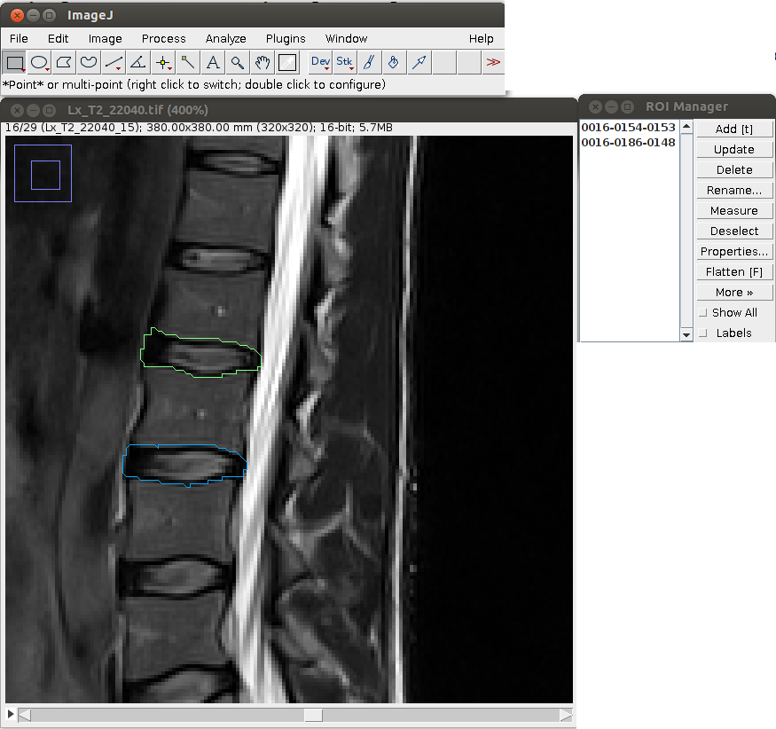

ImageJ LiveWire plug-in for computer-assisted muscle compartment segmentation
An implementation of Barrett & Mortensen 1997 live-wire boundary extraction paper. Load a pre-compiled plug-in from here1. The source code (including an ant build file) is available at github.
Use
- Open an image (if stack, browse to the image you want to segment). The plug-in only works on one image at a time, i.e. you need to re-load the plug-in, if you change the image.
- Fire up the plug-in: Plugins -> LiveWire.2
- Zoom in ('+' key) to make segmentation easier, and left click on a point to init segmentation.
- Moving the cursor around shows the segmentation in real-time. Left click to a point to freeze the segmentation up to that point.
- Press and hold the 'shift' key, and left click to add a straight line segment.
- Press and hold the 'ctrl' key, to remove the latest segment added (it is possible to reverse all the way to the first point).
- Double left click finishes the segmentation. The first click of the double click is added as a point to the segmentation, and a straight line segment is added from that point to the first point (used to init the segmentation) to close the region of interest. The roi is added to the RoiManager at this point.
- You can segment multiple ROIs in a given image. Once you've finished with the final ROI of a given image press 'q' key to shut down the plug-in. If you want to segment another image from the same stack, browse to that image, and restart the plug-in. N.B. Switching images without shutting down the plug-in will lead into erroneous results!

Sample segmentation of two regions of interest from the same image.
1. Fire up an instance of ImageJ, and drag and drop the link on the running ImageJ instance is the easiest way to install the plugin (save into jars directory). Alternatively copy the ListenerPlugin_.jar manually to ./ImageJ/plugins/jars, and (re)start ImageJ
↩
2. It is a good idea to tie the plug-in to a keyboard shortcut (Plugins->Shortcuts->Create Shortcut... and look for LiveWire from the alphabetically ordered list).
↩